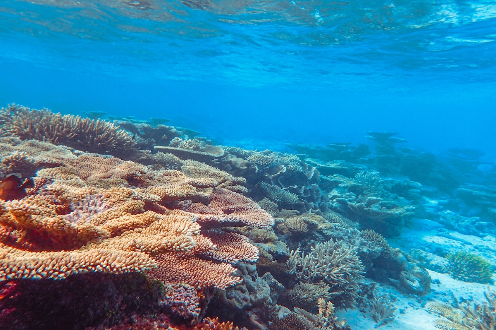

Desvendando os Segredos das Águas Profundas

Nas profundezas do oceano, onde a luz do sol mal penetra, encontra-se um mundo misterioso e pouco explorado. Recentemente, uma equipe de cientistas e mergulhadores embarcou em uma expedição corajosa para desvendar os segredos das águas profundas, e o que encontraram é verdadeiramente extraordinário.
A Expedição Subaquática:
Durante três meses, uma equipe internacional composta por biólogos marinhos, oceanógrafos e especialistas em mergulho se aventurou nas profundezas do oceano Atlântico. A expedição, financiada em parte por organizações de conservação marinha, tinha como objetivo estudar a vida subaquática em seu habitat natural e documentar espécies pouco conhecidas. Essa missão audaciosa levou os cientistas a locais tão profundos que poucos olhos humanos já contemplaram.

Tesouros da Escuridão:
A cada mergulho, os cientistas eram recebidos por um espetáculo de biodiversidade exuberante. Criaturas bioluminescentes, algumas das quais nunca antes documentadas, iluminavam a escuridão com seus padrões de luzes hipnotizantes. Tubarões de profundidade, raias gigantes e outras espécies impressionantes deslizavam graciosamente pelas águas, criando um ballet aquático de beleza inigualável. Esses animais, adaptados a um ambiente sem luz, desenvolveram estratégias fascinantes de sobrevivência que intrigaram os pesquisadores.
A Surpreendente Descoberta de uma Nova Espécie:
Um dos momentos mais emocionantes da expedição foi a descoberta de uma nova espécie de água-viva, que foi carinhosamente batizada de Medusa Luminosa. Com seu corpo translúcido e tentáculos bioluminescentes, esta criatura parece ser um verdadeiro tesouro da evolução. Os cientistas acreditam que essa espécie tem propriedades bioquímicas únicas que poderiam ter aplicações surpreendentes na medicina e na biotecnologia.
Impacto Ambiental e Conservação:
Além de maravilhas biológicas, a expedição também documentou evidências de danos causados por atividades humanas. Restos de equipamentos de pesca abandonados e resíduos plásticos foram encontrados em algumas das áreas mais profundas, reforçando a necessidade urgente de ações de conservação e proteção dos oceanos. A equipe de cientistas está trabalhando em estreita colaboração com organizações ambientais e governos para desenvolver estratégias de preservação que visam mitigar os impactos negativos e promover a sustentabilidade dos ecossistemas subaquáticos.

Conclusão:
A expedição às águas profundas não apenas revelou a incrível diversidade da vida subaquática, mas também destacou a importância crítica de proteger esses ecossistemas vulneráveis. O trabalho dos cientistas e mergulhadores serve como um lembrete poderoso de que, mesmo nas partes mais remotas do nosso planeta, o impacto humano pode ser sentido. À medida que mais pesquisas e expedições são planejadas para o futuro, espera-se que continuemos a desvendar os segredos das águas profundas e a promover a preservação deste incrível tesouro natural para as gerações vindouras. A missão não apenas expande nosso conhecimento científico, mas também nos lembra da responsabilidade coletiva de proteger e preservar os tesouros ocultos que o nosso planeta tem para oferecer.